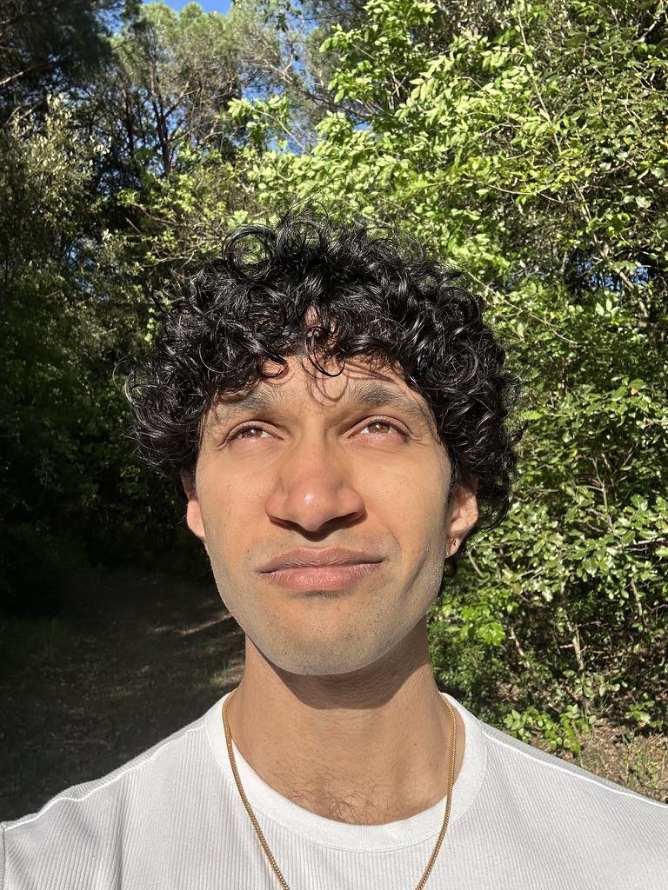

Aryaman Jeendgar
| About | Blog | CV | Papers to Read |

Hi! I am Aryaman Jeendgar, a final year undergrad from BITS Pilani, Hyderabad Campus double majoring in Physics and Electronics and Communications engineering.
Broadly, I am interested problems in Optimization Theory and their exciting intersection with modern Deep Learning, and love writing code to serve solutions to such problems!
Starting August 2024, I will be joining the International Computer Science Institute, Berkeley as a visiting scholar till July 2025, where I will work with Prof. Michael Mahoney's group on problems in Randomized Numerical Linear Algebra!!! If you're in California during this time, HMU!!!
I successfully finished the second half of my undergraduate thesis at CERN where my visit was generously funded by The Department of Physics, Princeton University. I worked with Dr. Kilian Lieret on problems concerning a data-driven pipeline for charged particle trajectory prediction and parallely, worked with Dr. Henry Schreiner on building scikit-build-core.
I successfully finished the first half of my undergraduate thesis at the International Computer Science Institute, UC Berkeley where I worked with Dr. Riley J. Murray on problems related to the Operator Relative Entropy Cone and made more technical contributions to the CVXPY codebase in the process! You can find my thesis here
During this time I also simultaneously worked as a Research Intern @ TCS Research with Prof. Mayank Baranwal and Dr. Kushal Chakrabarti on problems related to second-order neural network training dynamics, and analyzing them from an ODE-perspective!
I spent the summer of '23 as a Research Engineer Fellow @ Princeton University (under Princeton Research Computing), where I worked with Dr. Henry Schreiner, contributing to the ongoing scikit-HEP effort. I also participated in the GSoC-2023 program, where I (once again!) contributed to CVXPY!
I spent the summer of '22 writing open source code for CVXPY, under the GSoC-2022 program and interning at Intel Labs in the Cloud Systems Research group, where I worked with Dr. Sameh Gobriel on online optimization approaches to scaling out Nearest Neigbour Search queries for graph databases.
In the past, I worked with Professor Snehanshu Saha (BITS Goa) and Mr. Soma S. Dhavala (Wadhwani AI) on problems related to quantile regression in the context of neural networks and systematic methods for accelerating training for such scenarios, a pre-print of our latest work can be found HERE